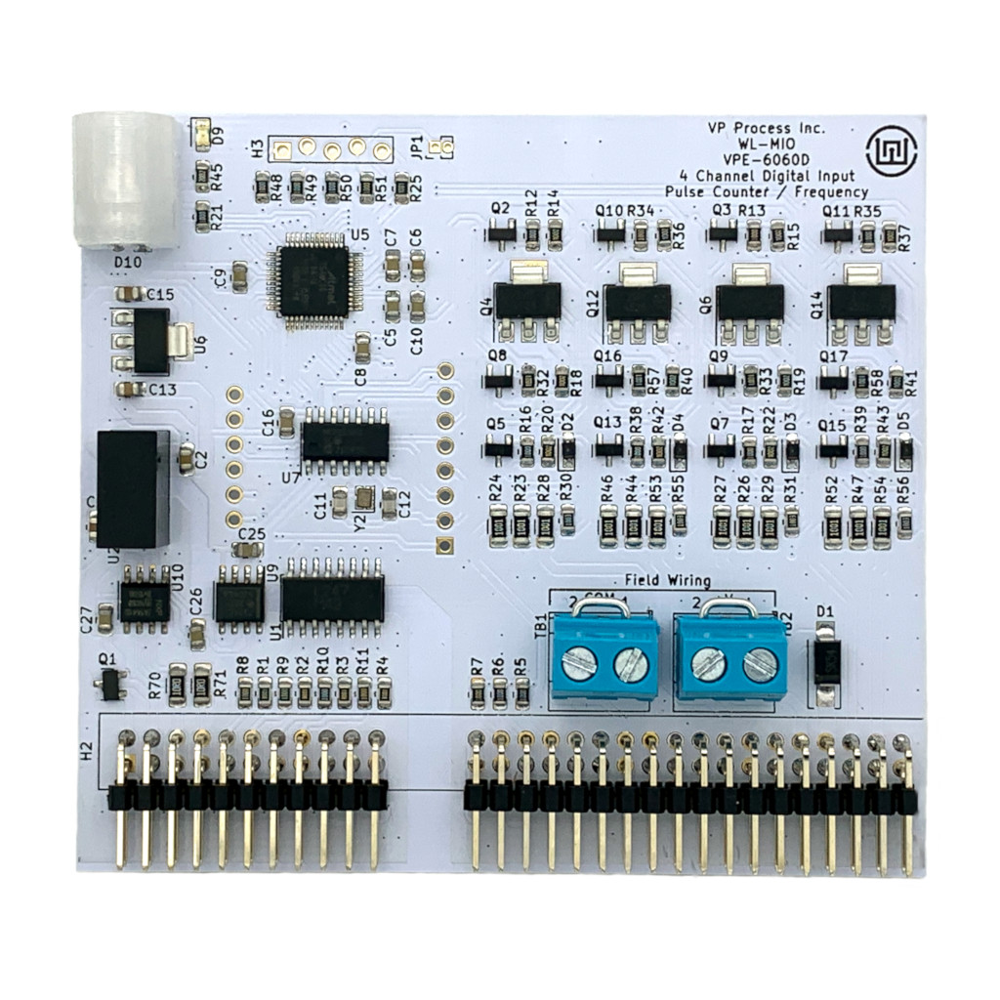

Description
System

WIDGETLORDS Multipurpose I/O (WL-MIO) process controller is an open, space efficient DIN mounted industrial process controller solution that provides a reliable, flexible, maintainable, and scalable product. The WL-MIO supports replacing electronic components and software modules over time without changing I/O device wiring. WL-MIO process Controller lands I/O device wiring “one last time”!
Open Industrial Process Controller Solution
Paramount to WL-MIO’s design approach is maximizing open standard’s based interfaces. Where standards do not exist, WL-MIO publishes specifications to support an open interface that extends the product life indefinitely and provides for the market innovative solutions to enhance product function. WL-MIO’s open and standard’s based interface specifications are available for:
- Interface to device wiring
- Mechanical I/O modules dimensions
- Electrical bus and connector pin definitions and connector part numbers
- I/O module inter-process communications
- Processor compute module
- Power distribution
- Software programming application programming interface
Python
C (enables Node Red, IEC-61499, IEC-61131)
Publishing these interface specifications enables flexibility to enhance function and maintainability over a longer time period.
Basic Components
WL-MIO process controller consists of the following components:
- VPE-6000 Backplane
- Processor Module
- VPE-6020 Processor Carrier Module
- VPE-6010 Power Supply Module (optional)
- VPE-6160 Power Over Ethernet PoE Module (optional)
- I/O Modules
The WL-MIO I/O modules offered are: - VPE 6040 Analog Input SDAFE mA & VDC Module 4 Channel
- VPE-6180 Analog Input 4-20 mA 8 Channel
- VPE-6080 Analog Input Thermistor NTC 10K Ω Module 8 Channel
- VPE-6190 Analog Input RTD PT100 PT1000 2,3,4 Wire 4 Channel
- VPE-6090 Analog Input Thermocouple / mVDC Module 6 Channel for TYpes B, E, J, K, N, R, S, T
- VPE-6050 Analog Output 0-20 mA Module 4 Channel
- VPE-6070 Analog Output 0-10 VDC Module 4 Channel
- VPE-6060 Digital Input Discrete, Frequency, & Pulse Module 4 Channel
- VPE-6030 Relay Output 2 A SPDT Module 4 Channel
(The text hyperlink references additional information about each WL-MIO component.)
Package size of WL-MIO is 8.25 in. H x 5.8 in. W x 3.5 in D. DIN rail length consumed is 8.25 in. Depending on WL-MIO unit configuration, a minimum of 32 I/O devices are supported. That is a density of 3.9 I/O per DIN rail inch!
Flexible and Scalable for product growth and longevity
The following three configurations illustrate WL-MIO’s flexibility and hardware scalability capabilities for solutioning small to large control systems.
Up to eight WL-MIO I/O modules may be positioned in any backplane position to accommodate existing I/O device wiring and / or implementation specific design considerations. The maximum cable distance for up to 16 backplane units is 300 feet to accommodate distributed I/O device termination locations being controlled by one WL-MIO solution.
Continuity of Operations
To achieve implementation specific continuity of operations, the WL-MIO solution supports redundant modules for bus power and processor for one or more WL-MIO units.
Maintenance
Access to I/O device terminal blocks and enclosure fasteners is from the top surface of the WL-MIO unit. To add or replace I/O modules, four enclosure screws are removed and the backplane unit’s cover lifts off.
Each WL-MIO module is designed for “hot-swap”. Therefore, the entire system does not require power-down to insert new modules or replace failed modules. Additional backplane units may be added to an existing solution without powering down.
Backplane I/O positions do not permit an I/O module to be inserted incorrectly. I/O module installation provides a positive feedback to the installer when performed correctly.
Color coded terminal blocks are coordinated with the backplane I/O positions to facilitate ease of I/O device wiring or troubleshooting. Each color coded terminal block contains a numeric label that is mapped to each specific WL-MIO I/O module.
When additional technical information is required in the field, each I/O, Processor, Power Supply, and Backplane field replaceable units contains a QR code that links to associated technical information specific to the field replaceable unit.
Back to Top
Basic Component Descriptions
Backplane
WL-MIO’s Backplane provides the ultimate flexibility to adapt a process control environment by landing field wiring one last time, allowing for technology insertion of controller modules (e.g. Processor, Analog I/O, Digital I/O, Power Supply), continuity of operations, scalability, and reliability.
Any combination of up to eight WL-MIO controller modules may be inserted into one Backplane. Backplane module guides ensure correct module insertion.
Two or three conductor field wiring is fastened to gray or blue color-coded screw-in terminals associated with each Backplane module position. Each Backplane module position has twelve field wiring positions (labeled 1-12) that are defined by the associated individual WL-MIO module inserted.
For I/O devices requiring sinking to the WL-MIO, a power input screw type terminal is provided for an external power source (e.g. 24VDC power supply). The external power source may be designed for redundancy to improve WL-MIO’s process control system reliability and continuity of operations.
A WL-MIO process controller system may consist of multiple Backplanes wired together. Backplane to Backplane connection is accomplished by 3 conductor wiring terminated into screw type terminals.
Two WL-MIO Backplane options are available. Both options are DIN rail mounted. Backplane with enclosure and Backplane only are offered. When enclosed, there are module back plates to prevent access to the modules and allowing access to module ports (e.g. Processor ethernet or USB) where applicable.
Additional Backplane Information
Back to Top
Processor Modules
A WL-MIO Processor integrates the industry accepted Raspberry Pi 4 Model B (system on a chip technology) to WL-MIO. A Raspberry Pi 4 is mounted to a WL-MIO’s Raspberry PI Carrier module. The full functionality of the Raspberry Pi 4 is available for users to select their optimum software application and system management environment. Electrical control of the WL-MIO’s I/O modules is via the Raspberry Pi’s GPIO interface. RS-485 and HART communications are available for additional flexibility for controlling I/O devices.
Multiple Processor modules are supported in a WL-MIO system depending on the control architecture desired. Processor modules may be plugged into any WL-MIO position to accommodate existing or structured wiring designs. WL-MIO’s Processor module is hot-swappable when upgrade or replacement is required.
WL-MIO’s Process supports control software applications in these languages or application technologies:
- C
- C++
- Python
- Node-Red
During operation the Raspberry Pi 4’s USB 2, USB 3, and Ethernet ports are accessible. Micro-HDMI ports, micro-SD card slot, MIPI DSI display port, MIPI CSI camera port, stereo audio and composite video port are accessible for custom development purposes only.
The WL-MIO Processor consists of two components, a Raspberry Pi 4 Model B, either WL-MIO Raspberry Pi Carrier Module & RS-485, or WL-MIO Raspberry Pi Carrier Module, RS-485, and HART. Factory assembled kits combining the Raspberry Pi 4 Model B and the WL-MIO Raspberry Pi Carrier module are available.
+
Additional Processor Module Information
Back to Top
Power Supply 5 VDC Module
WL-MIO’s Power Supply 5 VDC module provides an integrated bus power for the processor and I/O modules that have Backplanes connected together to create a WL-MIO Processor Controller system. The modules are designed for operational redundancy and continuity of operations. Two or more Power Supply 5 VDC modules provide WL-MIO Processor Control system continuity of operations. Health monitoring consisting of input voltage, input current, output voltage, and output current is performed to enable creation of alerts to subscribing software services within the WL-MIO Processor Controller system depending on the software environment chosen.
When more than one Backplane is utilized in a WL-MIO Processor Controller system, best practices would locate the second Power Supply 5 VDC in a separate Backplane module assembly. The Power Supply 5 VDC module may be plugged into any WL-MIO Backplane position to accommodate existing or structured wiring designs or continuity of operations. WL-MIO’s Power Supply 5 VDC is hot-swappable when upgrade or replacement is required.
Additional Information
Back to Top
Power Over Ethernet PoE Module
The WL-MIO PoE System is a versatile solution for various applications that require edge computing, monitoring, and control. By utilizing a WL-MIO backplane with a Raspberry Pi, you can easily measure sensors, transmitters, and provide analog outputs, relay contact outputs for control, and remote displays, while only needing to power it with a single ethernet cable.
The VPE-6160 PoE module provides an Isolated 24 VDC @ 1.5 A for the WL-MIO system as well as an isolated data port for the Raspberry Pi module or other Ethernet dependant modules. The on board TPS2372 POE Controller provides arbitration for 802.3at (PoE+) or 803.3bt systems. For passive systems, the Passive Jumper is installed into the "EN" position on the VPE-6160 module.
Additional Information
Back to Top
Analog Input SDAFE mA & VDC Module
Widgetlord’s proven Software Defined Analog Front End (SDAFE) technology provides your choice of analog signals like 4-20 mA, 1 to 5 VDC, and 0 to 10 VDC for each of the four input channels of WL-MIO’s 15 bit Analog Input SDAFE mA & VDC module. Module to module electrical isolation is determined by two field power jumpers (+V and COM) on the module.
Up to 127 Analog Input SDAFE mA & VDC modules (508 inputs) are supported with the scalable WL-MIO Process Controller system. When a mixture of other WL-MIO I/O modules are utilized in a control design, the Analog Input SDAFE mA &VDC module may be plugged into any WL-MIO Backplane position to accommodate wiring or control designs, or maintenance strategies. WL-MIO’s Analog Input SDAFE mA &VDC module is hot-swappable when upgrade or replacement is required.
Additional Information
Back to Top
Analog Input 4-20 mA Input Module
Widgetlord’s proven PI-SPI and PI-SPI-DIN series of analog input modules are the basis for the design of this VPE-6180 module. Up to 8 channels of mA inputs are available and the A/D conversion is provided using the Microchip MCP3208 Converter.
Up to 127 Analog Input SDAFE mA & VDC modules (508 inputs) are supported with the scalable WL-MIO Process Controller system. When a mixture of other WL-MIO I/O modules are utilized in a control design, the Analog Input SDAFE mA &VDC module may be plugged into any WL-MIO Backplane position to accommodate wiring or control designs, or maintenance strategies. WL-MIO’s Analog Input SDAFE mA &VDC module is hot-swappable when upgrade or replacement is required.
Additional Information
Back to Top
Analog Input Thermocouple / mVDC Module
WL-MIO’s Thermocouple / mVDC module provides connections for up to six channels of Types B, E, J, K, N, R, S, T Thermocouples or mVDC. The Thermocouple Type is programmable for each input channel to support a mixture of supplier’s thermocouples and/or mVDC inputs for customized field specific installations. Measurement data resolution is 16 bits.
Up to 127 Thermocouple / mVDC modules are supported with the scalable WL-MIO Process Controller system. When a mixture of other WL-MIO I/O modules are utilized in a control design, the Thermocouple / mVDC module module may be plugged into any WL-MIO Backplane position to accommodate wiring or control designs, or maintenance strategies. WL-MIO’s Thermocouple / mVDC module module is hot-swappable when upgrade or replacement is required.
Additional Information
Back to Top
Analog Input RTD PT100 PT1000 2,3,4 Wire 3 Channel

WL-MIO’s RTD module provides connections for up to three channels of Types PT100 or PT1000 RTD. Each RTD type and wiring connection (2, 3 or 4 Wire) is programmable for each input channel to support a mixture of supplier’s RTD's for customized field specific installations. Measurement data resolution is 15 bits.
Up to 127 RTD modules are supported with the scalable WL-MIO Process Controller system. When a mixture of other WL-MIO I/O modules are utilized in a control design, the Thermistor NTC 10K Ω module may be plugged into any WL-MIO Backplane position to accommodate wiring or control designs, or maintenance strategies. WL-MIO’s Thermistor NTC 10K Ω module is hot-swappable when upgrade or replacement is required.
Additional Information
Back to Top
Analog Input Thermistor NTC 10K Ω Module
WL-MIO’s Thermistor NTC 10K Ω module provides connection up to eight channels of 10K ohm negative temperature coefficient (NTC) thermistors. The thermistor utilizes the B or β (beta) parameter equation where B or β, and T0 variables are programmable for each channel to support a mixture of supplier’s thermistors and/or customized to field specific installations. Measurement data resolution is 12 bits.
Up to 127 Thermistor NTC 10K Ω modules (1,016 NTC 10K ohm thermistors) are supported with the scalable WL-MIO Process Controller system. When a mixture of other WL-MIO I/O modules are utilized in a control design, the Thermistor NTC 10K Ω module may be plugged into any WL-MIO Backplane position to accommodate wiring or control designs, or maintenance strategies. WL-MIO’s Thermistor NTC 10K Ω module is hot-swappable when upgrade or replacement is required.
Additional Information
Back to Top
Analog Output 0-20 mA Module 4 Channel
WL-MIO’s Analog Output 0-20 mA module provides connection up to four channels of 0 – 22 mA programmable current loop. Each 12 bit channel is independently programmed to a specific current loop range that supports a mix of devices. Module to module electrical isolation is determined by two field power jumpers (+V and COM) on the module. Current sinking or sourcing is supported depending on the attached I/O devices, programming and/or field power design.
Up to 127 Analog Output 0-20 mA modules (508 outputs) are supported with the scalable WL-MIO Process Controller system. When a mixture of other WL-MIO I/O modules are utilized in a control design, the Analog Output 0-20 mA module may be plugged into any WL-MIO Backplane position to accommodate existing or structured wiring designs. WL-MIO’s Analog Output 0-20 mA module is hot-swappable when upgrade or replacement is required.
Additional Analog Output Module Information:
Back to Top
Analog Output 0-10 VDC Module 4 Channel
WL-MIO’s Analog Output 0-10 VDC module provides connection up to four channels of 0 – 10 VDC programmable voltage loop. Each 12 bit channel is independently programmed to a specific voltage loop range that supports a mix of devices. Module to module electrical isolation is determined by two field power jumpers (+V and COM) on the module.
Up to 127 Analog Output 0-10 VDC modules (508 outputs) are supported with the scalable WL-MIO Process Controller system. When a mixture of other WL-MIO I/O modules are utilized in a control design, the Analog Output 0-10 VDC module may be plugged into any WL-MIO Backplane position to accommodate existing or structured wiring designs. WL-MIO’s Analog Output 0-10 VDC module is hot-swappable when upgrade or replacement is required.
Additional Analog Output Module Information:
Back to Top
Relay Output 2 A SPDT Module 4 Channel
WL-MIO’s Relay Output 2 A SPDT module provides connection up to four channels of providing DC or AC voltage to devices. The single pole double throw (SPDT) relay support up to 2 A VDC or VAC. Relay conditions of energized / de-energized is monitored to support control logic operational scenarios.
Up to 127 Relay Output 2 A SPDT modules (508 outputs) are supported with the scalable WL-MIO Process Controller system. When a mixture of other WL-MIO I/O modules are utilized in a control design, the Relay Output 2 A SPDT module may be plugged into any WL-MIO Backplane position to accommodate existing or structured wiring designs. WL-MIO’s Relay Output 2 A SPDT module is hot-swappable when upgrade or replacement is required.
Additional Information:
Back to Top
Digital Input Discrete, Frequency, & Pulse Module 4 Channel

WL-MIO’s Digital Input Discrete, Frequency, & Pulse module programmatically supports discrete, frequency, and pulse input signals. Each channel is uniquely programmed to the desired input signal type. Each input signal type offers sampling options that may be tailored to the desired sampling rate in support of the control design. Module to module electrical isolation is determined by two field power jumpers (+V and COM) on the module.
Up to 127 Digital Input Discrete, Frequency, & Pulse modules (508 inputs) are supported with the scalable WL-MIO Process Controller system. When a mixture of other WL-MIO I/O modules are utilized in a control design, the Digital Input Discrete, Frequency, & Pulse module may be plugged into any WL-MIO Backplane position to accommodate existing or structured wiring designs. WL-MIO’s Digital Input Discrete, Frequency, & Pulse module is hot-swappable when upgrade or replacement is required.